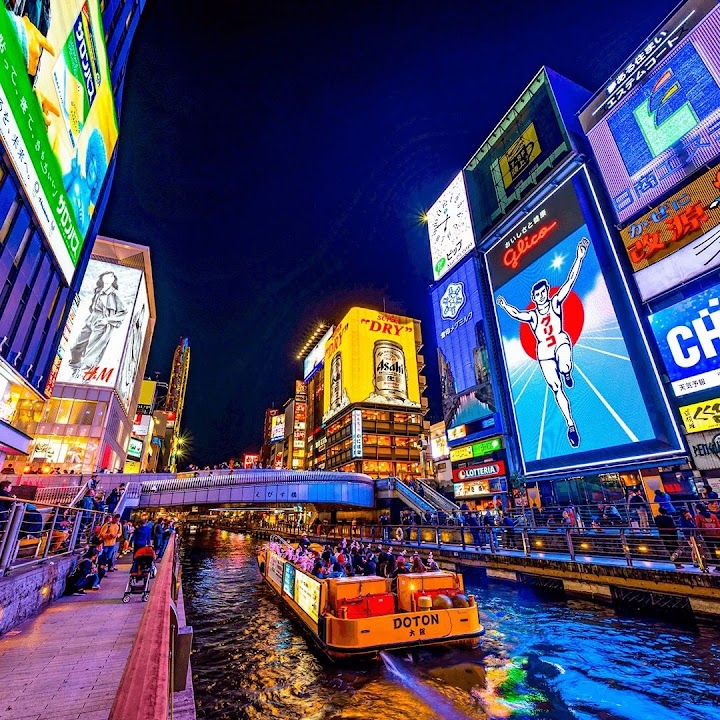
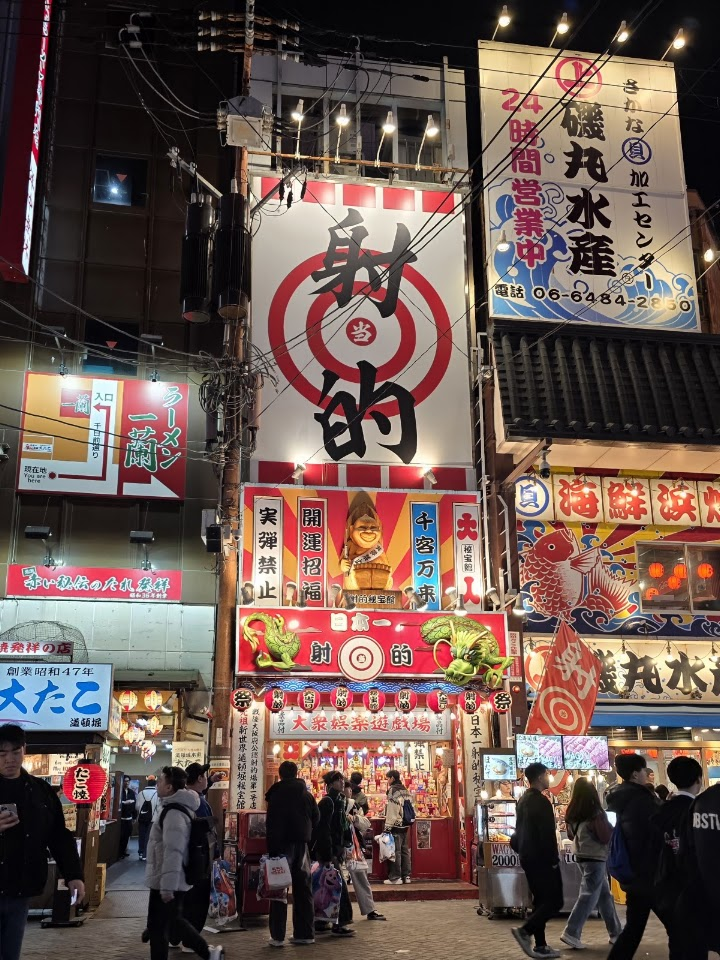
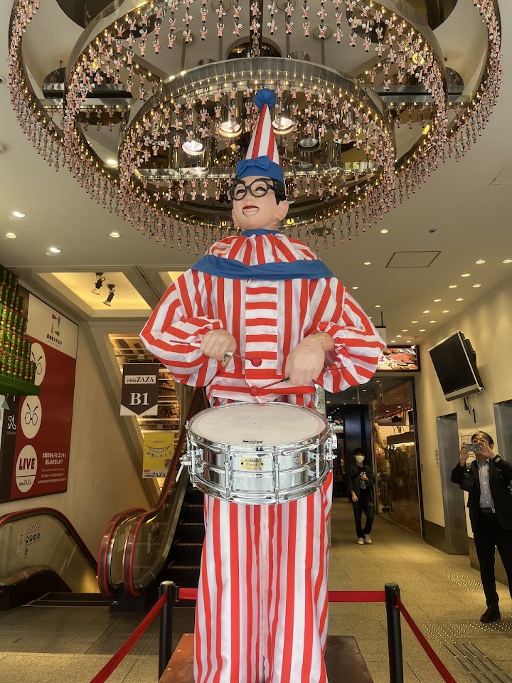
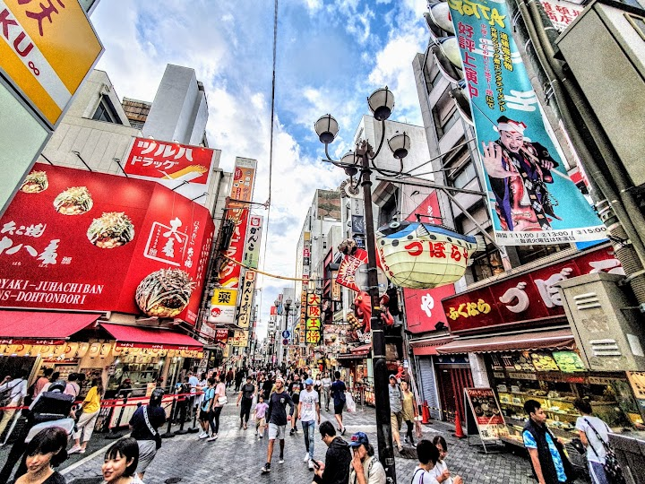
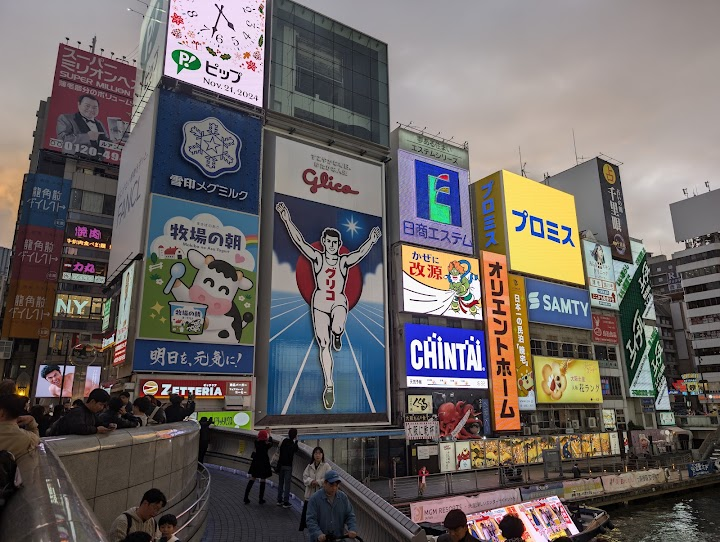

Dotonbori
Dotonbori is the lively canal-side entertainment street at the heart of Osaka, known for its huge illuminated billboards, including the Glico running man, plus restaurants and street food. It is at its best after dark.
Open in Google Maps (street view, more photos and reviews there)






Visitor tips on finding it and getting there
Welcome to the beating heart of Osaka. This is easily one of the most vibrant and energetic places you'll find anywhere in the world. I visited during Golden Week, so it was extremely crowded, but in my opinion, that chaotic energy only adds to its unique charm. This is definitely not the place to go if you're looking for peace and solitude! I arrived in the late afternoon and stayed well into the night. The contrast between day and night is massive as the iconic neon lights take over the canal, though the electric energy remains constant throughout. The area around Ebisu Bridge and the fam
The Dotonbori District is an absolute must-visit when traveling to Osaka! It is incredibly accessible, being just a short and pleasant walk from both the Shinsaibashi shopping arcade and the bustling Namba station area. The entire district is filled with incredible energy, iconic neon signs, and the famous Glico Man display, which towers over the canal with its brilliant, changing LED backdrop. It is a fantastic spot to take photos and copy his iconic victory pose. The area truly comes alive at night, glowing with vibrant colors and packed with a lively atmosphere that captures the heart of th